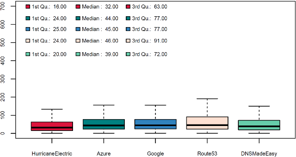
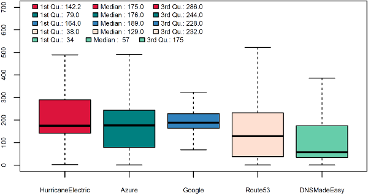
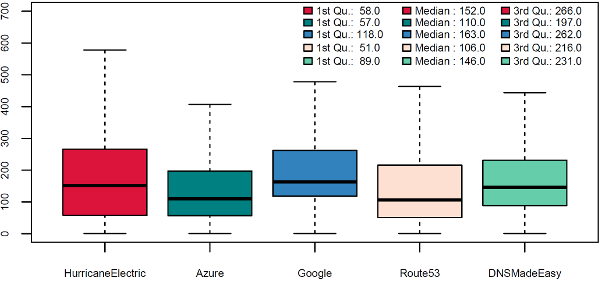

How Stack Overflow plans to survive the next DNS attack
Mark Henderson
Let’s talk about DNS. After all, what could go wrong? It’s just cache invalidation and naming things.
tl;dr
This blog post is about how Stack Overflow and the rest of the Stack Exchange network approaches DNS:
- By bench-marking different DNS providers and how we chose between them
- By implementing multiple DNS providers
- By deliberately breaking DNS to measure its impact
- By validating our assumptions and testing implementations of the DNS standard
The good stuff in this post is in the middle, so feel free to scroll down to “The Dyn Attack” if you want to get straight into the meat and potatoes of this blog post.
The Domain Name System
DNS had its moment in the spotlight in October 2016, with a major Distributed Denial of Service (DDos) attack launched against Dyn, which affected the ability for Internet users to connect to some of their favourite websites, such as Twitter, CNN, imgur, Spotify, and literally thousands of other sites.
But for most systems administrators or website operators, DNS is mostly kept in a little black box, outsourced to a 3rd party, and mostly forgotten about. And, for the most part, this is the way it should be. But as you start to grow to 1.3+ billion pageviews a month with a website where performance is a feature, every little bit matters.
In this post, I’m going to explain some of the decisions we’ve made around DNS in the past, and where we’re going with it in the future. I will eschew deep technical details and gloss over low-level DNS implementation in favour of the broad strokes.
In the beginning
So first, a bit of history: In the beginning, we ran our own DNS on-premises using artisanally crafted zone files with BIND. It was fast enough when we were doing only a few hundred million hits a month, but eventually hand-crafted zonefiles were too much hassle to maintain reliably. When we moved to Cloudflare as our CDN, their service is intimately coupled with DNS, so we demoted our BIND boxes out of production and handed off DNS to Cloudflare.
The search for a new provider
Fast forward to early 2016 and we moved our CDN to Fastly. Fastly doesn’t provide DNS service, so we were back on our own in that regards and our search for a new DNS provider began. We made a list of every DNS provider we could think of, and ended up with a shortlist of 10:
- Dyn
- NS1
- Amazon Route 53
- Google Cloud DNS
- Azure DNS (beta)
- DNSimple
- Godaddy
- EdgeCast (Verizon)
- Hurricane Electric
- DNS Made Easy
From this list of 10 providers, we did our initial investigations into their service offerings, and started eliminating services that were either not suited to our needs, outrageously expensive, had insufficient SLAs, or didn’t offer services that we required (such as a fully featured API). Then we started performance testing. We did this by embedding a hidden iFrame on 5% of the visitors to stackoverflow.com, which forced a request to a different DNS provider. We did this for each provider until we had some pretty solid performance numbers.
If you don’t know how to interpret a boxplot, here’s a brief primer for you. For the data nerds, these were generated with R’s standard boxplot functions, which means the upper and lower whiskers are min(max(x), Q_3 + 1.5 * IQR) and max(min(x), Q_1 – 1.5 * IQR), where IQR = Q_3 – Q_1
You can see that Hurricane Electric had a quarter of requests return in < 16ms and a median of 32ms, with the three “cloud” providers (Azure, Google Cloud DNS and Route 53) being slightly slower (being around 24ms first quarter and 45ms median), and DNS Made Easy coming in 2nd place (20ms first quarter, 39ms median).
You might wonder why the scale on that chart goes all the way to 700ms when the whiskers go nowhere near that high. This is because we have a worldwide audience, so just looking at data from the United States is not sufficient. If we look at data from New Zealand, we see a very different story:
Here you can see that Route 53, DNS Made Easy and Azure all have healthy 1st quarters, but Hurricane Electric and Google have very poor 1st quarters. Try to remember this, as this becomes important later on.
We also have Stack Overflow in Portuguese, so let’s check the performance from Brazil:
Here we can see Hurricane Electric, Route 53 and Azure being favoured, with Google and DNS Made Easy being slower.
So how do you reach a decision about which DNS provider to choose, when your main goal is performance? It’s difficult, because regardless of which provider you end up with, you are going to be choosing a provider that is sub-optimal for part of your audience.
You know what would be awesome? If we could have two DNS providers, each one servicing the areas that they do best! Thankfully this is something that is possible to implement with DNS. However, time was short, so we had to put our dual-provider design on the back-burner and just go with a single provider for the time being.
Our initial rollout of DNS was using Amazon Route 53 as our provider: they had acceptable performance figures over a large number of regions and had very effective pricing (on that note Route 53, Azure DNS, and Google Cloud DNS are all priced identically for basic DNS services).
The DYN attack
Roll forwards to October 2016. Route 53 had proven to be a stable, fast, and cost-effective DNS provider. We still had dual DNS providers on our backlog of projects, but like a lot of good ideas it got put on the back-burner until we had more time. Then the Internet ground to a halt. The DNS provider Dyn had come under attack, knocking a large number of authoritative DNS servers off the Internet, and causing widespread issues with connecting to major websites. All of a sudden DNS had our attention again. Stack Overflow and Stack Exchange were not affected by the Dyn outage, but this was pure luck.
What is the performance impact for our users in having multiple DNS providers, when both providers are working properly?
This one should be fairly easy to test. We’ve already done it once, so let’s just do it again. We fired up our tests, as we did in early 2016, but this time we specified two DNS providers:
- Route 53 & Google Cloud
- Route 53 & Azure DNS
- Route 53 & Our internal DNS
We did this simply by listing Name Servers from both providers in our domain registration (and obviously we set up the same records in the zones for both providers).
Azure
Azure has a fatal flaw in their DNS offering, as of the writing of this blog post. They do not permit the modification of the NS records in the apex of your zone:
You cannot add to, remove, or modify the records in the automatically created NS record set at the zone apex (name = “@”). The only change that’s permitted is to modify the record set TTL.
These NS records are what your DNS provider says are authoritative DNS servers for a given domain. It’s very important that they are accurate and correct, because they will be cached by clients and DNS resolvers and are more authoritative than the records provided by your registrar.
Without going too much into the actual specifics of how DNS caching and NS records work (it would take me another 2,500 words to describe this in detail), what would happen is this: Whichever DNS provider you contact first would be the only DNS provider you could contact for that domain until your DNS cache expires. If Azure is contacted first, then only Azure’s nameservers will be cached and used. This defeats the purpose of having multiple DNS providers, as in the event that the provider you’ve landed on goes offline, which is roughly 50:50, you will have no other DNS provider to fall back to.
function checkParent (src, dest) {
while (src != null) {
if (src.tagName == dest) return src
src = src.parentElement
}
return null
}
If we looked at the CPU from something like Nagios it is going to look quite low (20%). This problem is unlikely to show up when using a profiler unless you just happen to load the page during these slow downs. High resolution monitoring allows you to discover issues like this that get buried with low sample rates. Also having a platform to view multiple data sources allows for the discovery of correlated metrics.